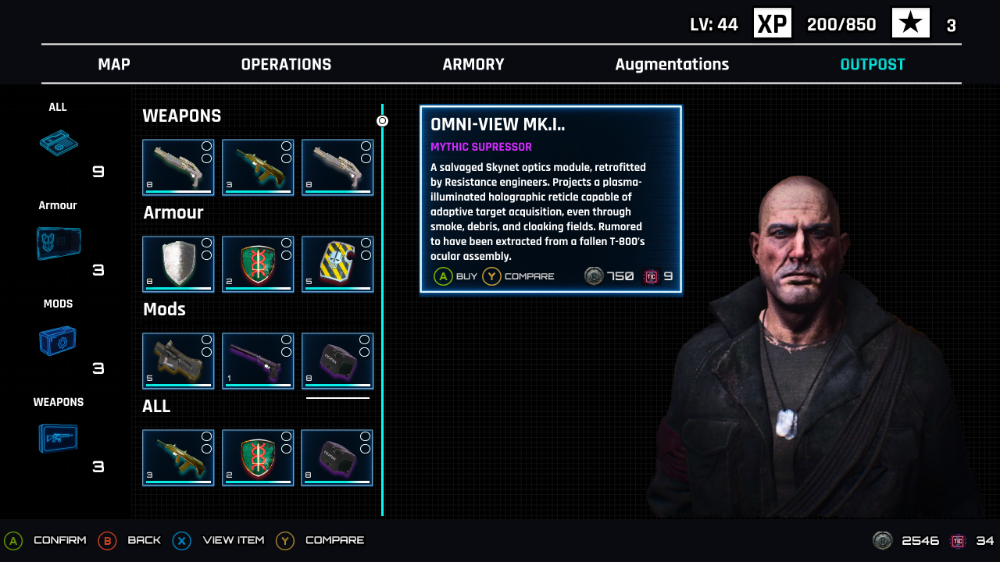
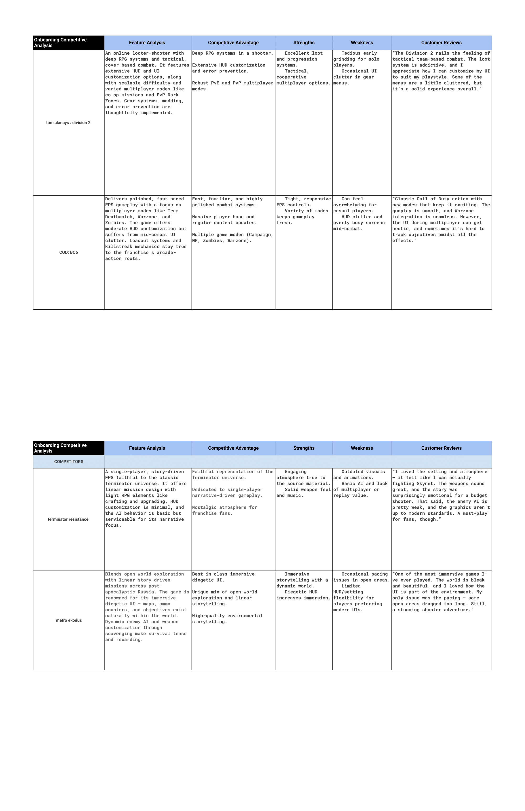

.png)

Project Information
- Category: Video Game Design
- Client: Tenyon
- Project date: APR, 2025
Terminator: Future war
The UI for the terminator: resistance sequel,Terminator: Future war.
Case Study:
Terminator: Future War — Game UI/UX Redesign
Reimagining Survival Through Immersive Game Interface Design
Terminator: Future War is an independent game UX/UI design concept exploring a hypothetical sequel to Terminator: Resistance. The project reimagines essential player interfaces through intuitive inventory management, streamlined navigation, clearer information hierarchy, and a cohesive retro-futuristic visual identity inspired by the Terminator universe.
Developed over three weeks, this project focuses on the Armory, Outpost, and Augmentations systems, exploring how functional interface design and immersive visual storytelling can work together in a dystopian science-fiction setting.

Project Overview
- Project Name: Terminator: Future War — Hypothetical Sequel
- Project Type: Independent Game UX/UI Design Concept
- Role: UX/UI Designer (Solo Designer)
- Tools Used: Figma, Adobe Photoshop, Photopea, Game UI Database, Dribbble, Behance
- Timeline: 3 Weeks
- Project Scope: Armory, inventory management, Outpost vendor interface, weapon and equipment information, and character augmentations
- Target Player: Players who value immersive science-fiction storytelling, tactical gameplay, intuitive inventory systems, and meaningful customization
- Objective: Reimagine the user interface for a hypothetical sequel to Terminator: Resistance, focusing on intuitive inventory management, streamlined navigation, improved information hierarchy, and a cohesive retro-futuristic visual identity inspired by the Terminator universe.
Value Added
Terminator: Future War explores how immersive visual storytelling and practical game UX/UI principles can work together. Through organized inventory systems, refined vendor interfaces, consistent navigation, and a Skynet-inspired design language, this concept aims to make essential player interactions clearer while preserving the franchise's gritty, dystopian atmosphere.
The Challenge
Problem Statement
Survival-focused science-fiction games require players to manage equipment, weapons, resources, and character progression while remaining immersed in the game world. Complex menus and unclear information hierarchy can make these essential interactions more difficult to navigate.
Inspired by Terminator: Resistance, this independent concept explores how a hypothetical sequel could introduce more organized player interfaces without losing the gritty, technology-driven atmosphere associated with the franchise.
Key UX/UI Challenges Identified
- Inventory and Resource Management: Managing weapons, equipment, and supplies in a survival-focused environment presents an opportunity to improve item organization, readability, and access to essential information.
- Navigation and Information Hierarchy: Complex gameplay systems require clear menu structures and visual prioritization so players can easily identify objectives, equipment details, and available actions.
- Visual Consistency and Immersion: The Terminator universe offers an opportunity to strengthen the connection between functional interfaces and its dystopian, technology-driven atmosphere through cohesive typography, colors, and visual elements.
- Vendor and Equipment Interactions: Purchasing, comparing, and managing equipment requires clear item descriptions, pricing, resource indicators, and recognizable interaction patterns to support informed player decisions.
Why Explore a Hypothetical Sequel?
- Explore a modernized game interface that balances practical usability with the cinematic, war-torn atmosphere of the Terminator universe.
- Create structured inventory and vendor interfaces that emphasize readable item information, organized navigation, and consistent interaction patterns.
- Establish a cohesive retro-futuristic visual identity inspired by Skynet technology, Resistance equipment, and the franchise's recognizable science-fiction aesthetic.
- Demonstrate how information architecture, visual hierarchy, and player-centered design principles can support a more intuitive and immersive game interface.
Research & Discovery
The research phase combined a scenario-based player persona with competitive benchmarking across four shooter games. These explorations helped establish design priorities for inventory management, interface customization, navigation, information hierarchy, and player immersion.
Research Snapshot
The Problem
Cluttered interfaces, overwhelming menus, and unclear mission tracking can interrupt immersion in story-driven science-fiction shooters.
The Gap
Players who value clean, functional interfaces need clearer navigation, meaningful customization, and easier access to essential gameplay information.
The Goal
Explore an intuitive, minimalist game interface that balances usability, player immersion, and the dystopian visual identity of the Terminator universe.
Player Persona
Meet Alex Ramirez, a 27-year-old freelance graphic designer and science-fiction gaming enthusiast who values immersive storytelling, tactical gameplay, and clean, functional interfaces. His preferences highlight opportunities to reduce menu complexity, improve mission visibility, and preserve immersion through thoughtful UI design.
.png)
What the Persona Values
Intuitive Navigation
Clear menus and accessible mission information that help players stay focused on gameplay rather than navigating complicated interfaces.
Immersive Storytelling
A minimalist, visually cohesive interface that complements the Terminator universe without distracting from its atmosphere and narrative.
Meaningful Customization
Organized equipment and interface options that support player preferences while keeping essential information readable and easy to find.
Key Player Insights
- Clarity Supports Immersion: Players need important equipment and mission information to remain accessible without overwhelming the screen.
- Organized Inventory Matters: Categorized equipment and readable item details can support more confident resource-management decisions.
- Visual Consistency Builds Familiarity: Shared navigation patterns, typography, and interaction cues help connect different gameplay systems.
- Customization Should Be Understandable: Clear categories and descriptive upgrade information can make character progression easier to explore.
Point of View
Alex Ramirez, a science-fiction gaming enthusiast, needs an organized and immersive game interface that makes inventory, equipment, vendor interactions, and character progression easier to navigate because he values tactical gameplay and wants essential information to remain accessible without interrupting the game's atmosphere.
How Might We?
- How might we make weapon and resource management more intuitive without overwhelming the player?
- How might we improve item comparisons, pricing, and purchase decisions within vendor interfaces?
- How might we organize character upgrades and progression into understandable categories?
- How might we maintain a dark, dystopian visual identity while improving readability and interface consistency?
Competitive Analysis
I analyzed Tom Clancy's The Division 2, Call of Duty: Black Ops 6, Terminator: Resistance, and Metro Exodus to explore how different shooters approach HUD customization, information hierarchy, gameplay navigation, and immersion.
The Division 2 demonstrates extensive interface customization, while Black Ops 6 emphasizes responsive combat and varied game modes. Terminator: Resistance highlights atmospheric storytelling, and Metro Exodus demonstrates how a minimal, diegetic interface can reinforce immersion.
These comparisons helped identify opportunities to balance readability, customization, and the Terminator franchise's dystopian visual identity in my hypothetical sequel concept.

From Research to Interface Design
Using the player persona and competitive analysis, I explored how essential game systems could be reorganized into more intuitive interfaces. The design process focused on inventory management, vendor interactions, character progression, and visual consistency.
My Design Process
- Research & Analysis: Developed a scenario-based player persona and compared four shooter games to identify opportunities related to interface clarity, customization, and immersion.
- Information Organization: Explored structured equipment categories, inventory grids, item details, navigation systems, and character progression.
- Interface Exploration: Developed high-fidelity concepts for the Armory and Outpost, alongside an Augmentations interface.
- Visual Refinement: Revised background treatments, typography, navigation, item presentation, and color consistency to better support readability and franchise identity.
Visual Direction
The visual direction combines dark grid-based backgrounds, cyan interface highlights, condensed typography, equipment imagery, and Xbox-style controller prompts. These elements establish a retro-futuristic interface inspired by Resistance technology and Skynet aesthetics.
The Design Challenge
The Balance
Preserve the Terminator universe's gritty, dystopian atmosphere while ensuring inventory information, equipment details, and navigation elements remain readable, organized, and accessible.
The Design Approach
Apply lessons from modern shooter interfaces to create structured inventory and vendor layouts, consistent navigation patterns, and a cohesive retro-futuristic visual language inspired by Resistance technology and Skynet aesthetics.
Wireframes & Design Evolution
Building on the player persona and competitive analysis, I developed high-fidelity concepts for two essential interfaces in Terminator: Future War: the Armory and Outpost.
Both screens explore how structured layouts, clear information hierarchy, and consistent navigation can support equipment management and purchasing decisions while preserving the Terminator universe's gritty, retro-futuristic atmosphere.
The Armory — Inventory Management
The Armory features a radial weapon selection layout, equipped item slots, ammunition indicators, and a categorized inventory grid. Selected weapons display detailed descriptions and performance statistics, allowing players to review their equipment within a single interface.
The Outpost — Vendor Interface
The Outpost organizes available weapons, armor, and modifications into distinct categories, with item cards, rarity indicators, currency information, and contextual purchase and comparison controls.
A featured item panel provides additional details alongside a Resistance character visual, reinforcing the game's narrative setting.
Augmentations — Character Progression
The Augmentations interface explores a more visual approach to character progression through five categories: Combat, Science, Survival, Cybernetics, and Engineering.
Icon-based upgrade cards, selected ability descriptions, and consistent controller prompts help organize the available progression options.
High-Fidelity Interface Concepts
Together, these designs demonstrate my approach to information architecture, visual consistency, and player-centered interface design, combining functional game menus with a cohesive dystopian aesthetic.
Key Design Decisions
The interface decisions focused on simplifying equipment management, supporting informed purchasing decisions, and preserving immersion through a consistent visual system.
Organize Inventory
Categorized inventory grids, equipped item slots, and detailed weapon information help players review and manage their available equipment.
Improve Vendor Clarity
Structured item cards, currency indicators, and contextual purchase controls support clearer equipment comparisons and decisions.
Strengthen Navigation
A unified navigation system connects Map, Operations, Armory, Augmentations, and Outpost through recognizable interface patterns.
Preserve Immersion
Dark backgrounds, cyan highlights, and retro-futuristic typography reinforce the Terminator universe's dystopian identity.
Clarify Progression
Visual upgrade cards and organized ability categories make character progression options easier to browse and understand.
Design Iterations
My initial Terminator: Future War designs explored colorful equipment cards, cinematic environments, and prominent navigation elements.
However, the bright backgrounds, inconsistent typography, and oversized interface components competed with important gameplay information and felt disconnected from the franchise's darker visual identity.
To address these issues, I refined the Outpost and Armory interfaces with a darker color palette, more consistent navigation, improved information hierarchy, and structured inventory layouts.
First Iteration
.png)
.png)
Final Iteration
Terminator: Resistance vs. Terminator: Future War
This comparison explores how the original Terminator: Resistance approaches weapon upgrades and character progression alongside my independent Terminator: Future War UI concept.
The original game uses a restrained, monochromatic interface with detailed weapon modification slots and a branching skill progression system. Building on these foundations, my redesign explores a more visually structured approach through categorized equipment management, icon-based augmentation cards, consistent navigation, and clearer information grouping.
Original Terminator: Resistance


Terminator: Future War Redesign
What Changed?
- Equipment Management: Expanded the interface concept to include radial weapon selection, equipment slots, categorized inventory, ammunition indicators, and detailed weapon information.
- Character Progression: Explored icon-based augmentation cards and additional ability categories to create a more visual browsing experience.
- Navigation: Established a unified system connecting Map, Operations, Armory, Augmentations, and Outpost.
- Visual Identity: Introduced dark grid backgrounds, cyan highlights, condensed typography, and consistent controller prompts to support a cohesive retro-futuristic interface.
Explore the Interactive Prototype
The Figma prototype showcases the Terminator: Future War interface concept and provides an opportunity to explore the proposed game UI design.
Open Interactive Figma Prototype
This is an independent game interface design prototype, not a playable Terminator game.
Design Outcomes & Intended Impact
The project resulted in high-fidelity interface concepts for the Armory, Outpost, and Augmentations systems, alongside documented design iterations and comparisons with Terminator: Resistance.
The following are intended design benefits of the concept, not measured usability-testing results.
Organized Equipment Management
Categorized inventory layouts, equipment slots, ammunition indicators, and weapon statistics aim to make important equipment information easier to locate and review.
Clearer Vendor Interactions
Structured item cards, pricing information, rarity indicators, and contextual controls aim to support more informed purchasing and equipment-comparison decisions.
Cohesive Game Interface
Consistent navigation, dark grid backgrounds, cyan accents, and recognizable controller prompts connect different gameplay systems while reinforcing the Terminator universe's atmosphere.
Design Improvements
- Organized inventory layouts for weapons, equipment, and resources.
- Clearer item information, pricing, and vendor interactions.
- Improved visual hierarchy and consistent menu navigation.
- Cohesive retro-futuristic visuals inspired by the Terminator universe.
Intended Player Benefits
- Easier discovery of weapons, equipment, and available resources.
- More informed decisions when managing or purchasing items.
- Less effort spent locating essential menu information.
- Greater visual continuity between gameplay systems and the game's dystopian atmosphere.
Reflection & What I Learned
- Balancing Immersion with Usability: Designing interfaces for the Terminator universe taught me how to balance atmospheric visual storytelling with practical usability. Dark backgrounds, futuristic typography, and cyan accents helped establish a dystopian aesthetic while keeping equipment information, navigation, and player actions visually organized.
- Iteration Strengthens Design Decisions: Comparing my initial concepts with the final Armory and Outpost designs reinforced the importance of evaluating visual hierarchy, color consistency, and layout structure. I learned to preserve effective elements, such as the radial weapon selection system, while refining navigation, typography, and inventory presentation.
- Research Provides Direction, Not Validation: Developing a scenario-based player persona and analyzing The Division 2, Black Ops 6, Terminator: Resistance, and Metro Exodus helped me identify design opportunities related to navigation, customization, and immersion. Without direct usability testing, these insights served as a foundation for design exploration rather than proof of improved player performance.
- Consistency Reinforces Franchise Identity: Establishing a cohesive visual language across the Armory, Outpost, and Augmentations interfaces demonstrated how consistent typography, colors, navigation patterns, and controller prompts can create a recognizable experience while respecting the Terminator franchise's established aesthetic.
- Information Architecture Supports Complex Game Systems: Organizing weapons, equipment, vendor items, and character augmentations taught me how important clear categorization and information hierarchy are in game interface design. Separating essential information into recognizable sections can help players understand available options without overwhelming the interface.
Next Steps
Future development could include testing the Armory, Outpost, and Augmentations interfaces with players, evaluating controller navigation, refining accessibility, and reviewing equipment-management flows based on usability feedback.
Terminator: Future War is an independent, unofficial UX/UI design concept by Rojas Design Studios. It is not affiliated with or endorsed by the Terminator franchise's rights holders.